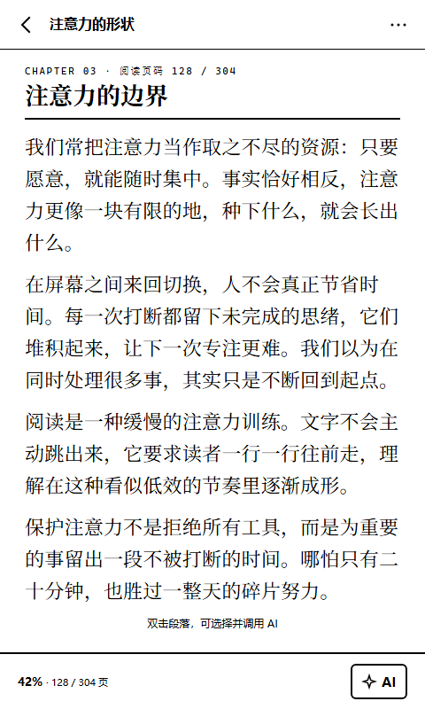

EXPLORE / NOTES ON READING
阅读、注意力，
以及 AI 应该待的位置。
关于如何读得更深、记得更久；也关于一块更安静的屏幕如何改变我们的阅读节奏。
为什么我们仍然需要一块只用来阅读的屏幕？
在手机上，阅读总是被下一条消息打断。我们试着把阅读重新放回一块不推送、不闪烁、不主动打扰的屏幕上。
阅读全文 →
READER / DESIGN NOTE 01
把一本书读完，比读完很多本更难
碎片化的阅读量在增加，但完整的理解正在变少。我们如何重新训练注意力？
阅读全文 →当 AI 给出答案，原文还重要吗？
摘要和问答节省了时间，但也可能让我们停止核对。我们选择保留页码与原文依据。
即将上线4.3 英寸，为什么是这个尺寸？
足够放下一段完整的思考，又足够小，能在通勤时单手握住。
即将上线READING LIST / 01
通勤 20 分钟读什么
适合一段地铁或公交的短阅读，不需要做笔记，但值得记住一个观点。
- 一篇关于注意力残留的长文
- 《注意力的形状》第三章
- 一份 10 页的阅读方法清单
READING LIST / 02
需要 AI 陪你读的三种材料
当你需要理解结构、翻译段落，或把读到的东西留下来。
- 英文论文与研究报告
- 结构复杂的长篇非虚构
- 在工作间隙听完的语音笔记
CASE STUDY / 示例场景
“通勤时不强迫自己记住所有内容，只把不懂的段落留给 AI，回到原文的路径还在。”